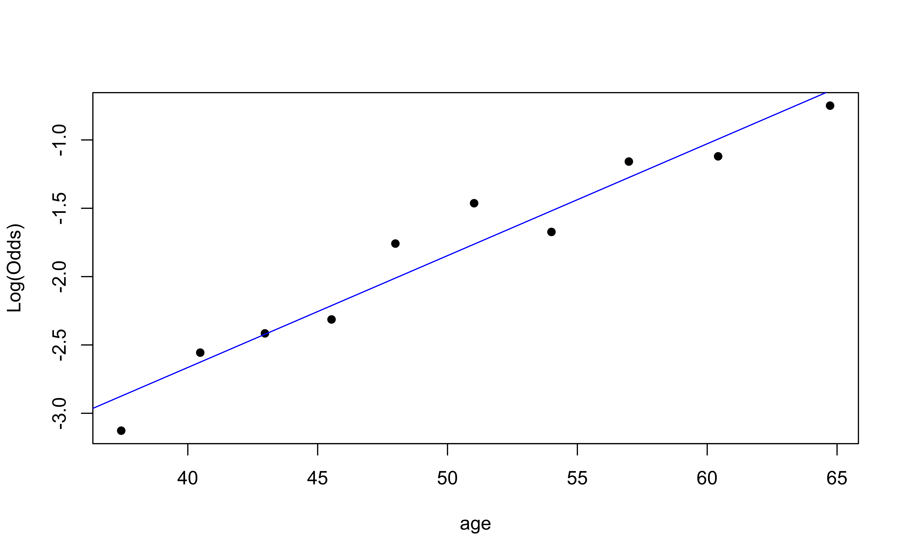

# load packages
library(tidyverse)
library(tidymodels)
library(openintro)
library(knitr)
library(kableExtra) # for table embellishments
library(Stat2Data) # for empirical logit
# set default theme and larger font size for ggplot2
ggplot2::theme_set(ggplot2::theme_minimal(base_size = 20))LR: Inference + conditions
STA 210 - Spring 2022
Welcome
Topics
- Bulding predictive logistic regression models
- Sensitivity and specificity
- Making classification decisions
Computational setup
Data
Risk of coronary heart disease
This dataset is from an ongoing cardiovascular study on residents of the town of Framingham, Massachusetts. We want to examine the relationship between various health characteristics and the risk of having heart disease.
high_risk:- 1: High risk of having heart disease in next 10 years
- 0: Not high risk of having heart disease in next 10 years
age: Age at exam time (in years)education: 1 = Some High School, 2 = High School or GED, 3 = Some College or Vocational School, 4 = CollegecurrentSmoker: 0 = nonsmoker, 1 = smoker
Data prep
heart_disease <- read_csv(here::here("slides", "data/framingham.csv")) %>%
select(age, education, TenYearCHD, totChol, currentSmoker) %>%
drop_na() %>%
mutate(
high_risk = as.factor(TenYearCHD),
education = as.factor(education),
currentSmoker = as.factor(currentSmoker)
)
heart_disease# A tibble: 4,086 × 6
age education TenYearCHD totChol currentSmoker high_risk
<dbl> <fct> <dbl> <dbl> <fct> <fct>
1 39 4 0 195 0 0
2 46 2 0 250 0 0
3 48 1 0 245 1 0
4 61 3 1 225 1 1
5 46 3 0 285 1 0
6 43 2 0 228 0 0
7 63 1 1 205 0 1
8 45 2 0 313 1 0
9 52 1 0 260 0 0
10 43 1 0 225 1 0
# … with 4,076 more rowsInference for a model
Modeling risk of coronary heart disease
From age and education:
risk_fit <- logistic_reg() %>%
set_engine("glm") %>%
fit(high_risk ~ age + education,
data = heart_disease, family = "binomial")Model output
tidy(risk_fit, conf.int = TRUE) %>%
kable(format = "markdown", digits = 3)| term | estimate | std.error | statistic | p.value | conf.low | conf.high |
|---|---|---|---|---|---|---|
| (Intercept) | -5.508 | 0.311 | -17.692 | 0.000 | -6.125 | -4.904 |
| age | 0.076 | 0.006 | 13.648 | 0.000 | 0.065 | 0.087 |
| education2 | -0.245 | 0.113 | -2.172 | 0.030 | -0.469 | -0.026 |
| education3 | -0.236 | 0.135 | -1.753 | 0.080 | -0.504 | 0.024 |
| education4 | -0.024 | 0.150 | -0.161 | 0.872 | -0.323 | 0.264 |
\[ \small{\log\Big(\frac{\hat{\pi}}{1-\hat{\pi}}\Big) = -5.385 + 0.073 ~ \text{age} - 0.242 ~ \text{ed2} - 0.235 ~ \text{ed3} - 0.020 ~ \text{ed4}} \]
Hypothesis test for \(\beta_j\)
Hypotheses: \(H_0: \beta_j = 0 \hspace{2mm} \text{ vs } \hspace{2mm} H_a: \beta_j \neq 0\)
. . .
Test Statistic: \[z = \frac{\hat{\beta}_j - 0}{SE_{\hat{\beta}_j}}\]
. . .
P-value: \(P(|Z| > |z|)\), where \(Z \sim N(0, 1)\), the Standard Normal distribution
Confidence interval for \(\beta_j\)
We can calculate the .vocab[C% confidence interval] for \(\beta_j\) as the following:
\[ \Large{\hat{\beta}_j \pm z^* SE_{\hat{\beta}_j}} \]
where \(z^*\) is calculated from the \(N(0,1)\) distribution
. . .
This is an interval for the change in the log-odds for every one unit increase in \(x_j\).
Interpretation in terms of the odds
The change in odds for every one unit increase in \(x_j\).
\[ \Large{e^{\hat{\beta}_j \pm z^* SE_{\hat{\beta}_j}}} \]
. . .
Interpretation: We are \(C\%\) confident that for every one unit increase in \(x_j\), the odds multiply by a factor of \(e^{\hat{\beta}_j - z^* SE_{\hat{\beta}_j}}\) to \(e^{\hat{\beta}_j + z^* SE_{\hat{\beta}_j}}\), holding all else constant.
Coefficient for age
| term | estimate | std.error | statistic | p.value | conf.low | conf.high |
|---|---|---|---|---|---|---|
| (Intercept) | -5.508 | 0.311 | -17.692 | 0.000 | -6.125 | -4.904 |
| age | 0.076 | 0.006 | 13.648 | 0.000 | 0.065 | 0.087 |
| education2 | -0.245 | 0.113 | -2.172 | 0.030 | -0.469 | -0.026 |
| education3 | -0.236 | 0.135 | -1.753 | 0.080 | -0.504 | 0.024 |
| education4 | -0.024 | 0.150 | -0.161 | 0.872 | -0.323 | 0.264 |
. . .
Hypotheses:
\[ H_0: \beta_{1} = 0 \hspace{2mm} \text{ vs } \hspace{2mm} H_a: \beta_{1} \neq 0 \]
Coefficient for age
| term | estimate | std.error | statistic | p.value | conf.low | conf.high |
|---|---|---|---|---|---|---|
| (Intercept) | -5.508 | 0.311 | -17.692 | 0.000 | -6.125 | -4.904 |
| age | 0.076 | 0.006 | 13.648 | 0.000 | 0.065 | 0.087 |
| education2 | -0.245 | 0.113 | -2.172 | 0.030 | -0.469 | -0.026 |
| education3 | -0.236 | 0.135 | -1.753 | 0.080 | -0.504 | 0.024 |
| education4 | -0.024 | 0.150 | -0.161 | 0.872 | -0.323 | 0.264 |
Test statistic:
\[ z = \frac{0.0733 - 0}{0.00547} = 13.4 \]
Coefficient for age
| term | estimate | std.error | statistic | p.value | conf.low | conf.high |
|---|---|---|---|---|---|---|
| (Intercept) | -5.508 | 0.311 | -17.692 | 0.000 | -6.125 | -4.904 |
| age | 0.076 | 0.006 | 13.648 | 0.000 | 0.065 | 0.087 |
| education2 | -0.245 | 0.113 | -2.172 | 0.030 | -0.469 | -0.026 |
| education3 | -0.236 | 0.135 | -1.753 | 0.080 | -0.504 | 0.024 |
| education4 | -0.024 | 0.150 | -0.161 | 0.872 | -0.323 | 0.264 |
P-value:
\[ P(|Z| > |13.4|) \approx 0 \]
. . .
2 * pnorm(13.4,lower.tail = FALSE)[1] 6.046315e-41Coefficient for age
| term | estimate | std.error | statistic | p.value | conf.low | conf.high |
|---|---|---|---|---|---|---|
| (Intercept) | -5.508 | 0.311 | -17.692 | 0.000 | -6.125 | -4.904 |
| age | 0.076 | 0.006 | 13.648 | 0.000 | 0.065 | 0.087 |
| education2 | -0.245 | 0.113 | -2.172 | 0.030 | -0.469 | -0.026 |
| education3 | -0.236 | 0.135 | -1.753 | 0.080 | -0.504 | 0.024 |
| education4 | -0.024 | 0.150 | -0.161 | 0.872 | -0.323 | 0.264 |
Conclusion:
The p-value is very small, so we reject \(H_0\). The data provide sufficient evidence that age is a statistically significant predictor of whether someone is high risk of having heart disease, after accounting for education.
Comparing models
Log likelihood
\[ \log L = \sum\limits_{i=1}^n[y_i \log(\hat{\pi}_i) + (1 - y_i)\log(1 - \hat{\pi}_i)] \]
Measure of how well the model fits the data
Higher values of \(\log L\) are better
Deviance = \(-2 \log L\)
- \(-2 \log L\) follows a \(\chi^2\) distribution with \(n - p - 1\) degrees of freedom
Comparing nested models
Suppose there are two models:
- Reduced Model includes predictors \(x_1, \ldots, x_q\)
- Full Model includes predictors \(x_1, \ldots, x_q, x_{q+1}, \ldots, x_p\)
We want to test the hypotheses
\[ \begin{aligned} H_0&: \beta_{q+1} = \dots = \beta_p = 0 \\ H_A&: \text{ at least 1 }\beta_j \text{ is not } 0 \end{aligned} \]
To do so, we will use the Drop-in-deviance test, also known as the Nested Likelihood Ratio test
Drop-in-deviance test
Hypotheses:
\[ \begin{aligned} H_0&: \beta_{q+1} = \dots = \beta_p = 0 \\ H_A&: \text{ at least 1 }\beta_j \text{ is not } 0 \end{aligned} \]
. . .
Test Statistic: \[G = (-2 \log L_{reduced}) - (-2 \log L_{full})\]
. . .
P-value: \(P(\chi^2 > G)\), calculated using a \(\chi^2\) distribution with degrees of freedom equal to the difference in the number of parameters in the full and reduced models
\(\chi^2\) distribution
Model with age and education
Should we add currentSmoker to this model?
| term | estimate | std.error | statistic | p.value | conf.low | conf.high |
|---|---|---|---|---|---|---|
| (Intercept) | -5.508 | 0.311 | -17.692 | 0.000 | -6.125 | -4.904 |
| age | 0.076 | 0.006 | 13.648 | 0.000 | 0.065 | 0.087 |
| education2 | -0.245 | 0.113 | -2.172 | 0.030 | -0.469 | -0.026 |
| education3 | -0.236 | 0.135 | -1.753 | 0.080 | -0.504 | 0.024 |
| education4 | -0.024 | 0.150 | -0.161 | 0.872 | -0.323 | 0.264 |
Should we add currentSmoker to the model?
First model, reduced:
risk_fit_reduced <- logistic_reg() %>%
set_engine("glm") %>%
fit(high_risk ~ age + education,
data = heart_disease, family = "binomial")Second model, full:
Should we add currentSmoker to the model?
Calculate deviance for each model:
(dev_reduced <- glance(risk_fit_reduced)$deviance)[1] 3244.187(dev_full <- glance(risk_fit_full)$deviance)[1] 3221.901. . .
Drop-in-deviance test statistic:
(test_stat <- dev_reduced - dev_full)[1] 22.2863Should we add currentSmoker to the model?
Calculate the p-value using a pchisq(), with degrees of freedom equal to the number of new model terms in the second model:
pchisq(test_stat, 1, lower.tail = FALSE) [1] 2.348761e-06. . .
Conclusion: The p-value is very small, so we reject \(H_0\). The data provide sufficient evidence that the coefficient of currentSmoker is not equal to 0. Therefore, we should add it to the model.
Drop-in-Deviance test in R
We can use the
anovafunction to conduct this testAdd
test = "Chisq"to conduct the drop-in-deviance test
. . .
anova(risk_fit_reduced$fit, risk_fit_full$fit, test = "Chisq") %>%
tidy()# A tibble: 2 × 5
Resid..Df Resid..Dev df Deviance p.value
<dbl> <dbl> <dbl> <dbl> <dbl>
1 4081 3244. NA NA NA
2 4080 3222. 1 22.3 0.00000235Model selection
Use AIC or BIC for model selection
\[ \begin{align} &AIC = - 2 * \log L - \color{purple}{n\log(n)}+ 2(p +1)\\[5pt] &BIC =- 2 * \log L - \color{purple}{n\log(n)} + log(n)\times(p+1) \end{align} \]
AIC from the glance() function
Let’s look at the AIC for the model that includes age, education, and currentSmoker
glance(risk_fit_full)$AIC[1] 3233.901. . .
Calculating AIC
- 2 * glance(risk_fit_full)$logLik + 2 * (5 + 1)[1] 3233.901Comparing the models using AIC
Let’s compare the full and reduced models using AIC.
glance(risk_fit_reduced)$AIC[1] 3254.187glance(risk_fit_full)$AIC[1] 3233.901Based on AIC, which model would you choose?
Comparing the models using BIC
Let’s compare the full and reduced models using BIC
glance(risk_fit_reduced)$BIC[1] 3285.764glance(risk_fit_full)$BIC[1] 3271.793Based on BIC, which model would you choose?
Conditions
The model
Let’s predict high_risk from age, total cholesterol, and whether the patient is a current smoker:
risk_fit <- logistic_reg() %>%
set_engine("glm") %>%
fit(high_risk ~ age + totChol + currentSmoker,
data = heart_disease, family = "binomial")
tidy(risk_fit, conf.int = TRUE) %>%
kable(digits = 3)| term | estimate | std.error | statistic | p.value | conf.low | conf.high |
|---|---|---|---|---|---|---|
| (Intercept) | -6.673 | 0.378 | -17.647 | 0.000 | -7.423 | -5.940 |
| age | 0.082 | 0.006 | 14.344 | 0.000 | 0.071 | 0.094 |
| totChol | 0.002 | 0.001 | 1.940 | 0.052 | 0.000 | 0.004 |
| currentSmoker1 | 0.443 | 0.094 | 4.733 | 0.000 | 0.260 | 0.627 |
Conditions for logistic regression
Linearity: The log-odds have a linear relationship with the predictors.
Randomness: The data were obtained from a random process
Independence: The observations are independent from one another.
Empirical logit
The empirical logit is the log of the observed odds:
\[ \text{logit}(\hat{p}) = \log\Big(\frac{\hat{p}}{1 - \hat{p}}\Big) = \log\Big(\frac{\# \text{Yes}}{\# \text{No}}\Big) \]
Calculating empirical logit (categorical predictor)
If the predictor is categorical, we can calculate the empirical logit for each level of the predictor.
heart_disease %>%
count(currentSmoker, high_risk) %>%
group_by(currentSmoker) %>%
mutate(prop = n/sum(n)) %>%
filter(high_risk == "1") %>%
mutate(emp_logit = log(prop/(1-prop)))# A tibble: 2 × 5
# Groups: currentSmoker [2]
currentSmoker high_risk n prop emp_logit
<fct> <fct> <int> <dbl> <dbl>
1 0 1 301 0.145 -1.77
2 1 1 318 0.158 -1.67Calculating empirical logit (quantitative predictor)
Divide the range of the predictor into intervals with approximately equal number of cases. (If you have enough observations, use 5 - 10 intervals.)
Calculate the mean value of the predictor in each interval.
Compute the empirical logit for each interval.
. . .
Then, create a plot of the empirical logit versus the mean value of the predictor in each interval.
Empirical logit plot in R (quantitative predictor)
emplogitplot1(high_risk ~ age,
data = heart_disease,
ngroups = 10)
Empirical logit plot in R (interactions)
emplogitplot2(high_risk ~ age + currentSmoker, data = heart_disease,
ngroups = 10,
putlegend = "bottomright")
Checking linearity
emplogitplot1(high_risk ~ age,
data = heart_disease,
ngroups = 10)
emplogitplot1(high_risk ~ totChol,
data = heart_disease,
ngroups = 10)
. . .
✅ The linearity condition is satisfied. There is a linear relationship between the empirical logit and the predictor variables.
Checking randomness
We can check the randomness condition based on the context of the data and how the observations were collected.
- Was the sample randomly selected?
- If the sample was not randomly selected, ask whether there is reason to believe the observations in the sample differ systematically from the population of interest.
. . .
✅ The randomness condition is satisfied. We do not have reason to believe that the participants in this study differ systematically from adults in the U.S. in regards to health characteristics and risk of heart disease.
Checking independence
- We can check the independence condition based on the context of the data and how the observations were collected.
- Independence is most often violated if the data were collected over time or there is a strong spatial relationship between the observations.
. . .
✅ The independence condition is satisfied. It is reasonable to conclude that the participants’ health characteristics are independent of one another.